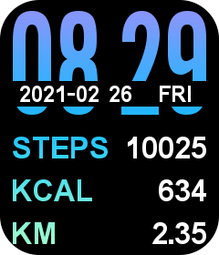

Magic3
MOYOUNG‑V2 dashboardNot connected.
Today
Activity, sleep and current measurements directly from your watch.
Watch settings
Read the current values first. Only the section whose Save button you click will be changed.
Connect the watch first.
General
Raise to wake
Use 00:00–00:00 for the entire day.
Do not disturb
Movement reminder
Alarm
No alarms have been read yet.
Not every firmware supports every command. An unsupported setting is reported without changing the other settings.
Add a watch face
Create a simple 240×280 watch face. The editor builds a MoYoung Type-B .bin file locally with MiniLZO, compatible with MOY-NBA5/template 34.
The preview uses test values. Choose digital, Binary dots with four bits under 8–4–2–1, Binary 1s and 0s without a value header, or analogue with hour and minute hands. Select an element to move or scale it. Distance includes a dedicated decimal-point sprite so the watch displays a point instead of borrowing an unrelated image.
Or choose an existing compatible MoYoung/Da Fit watch-face file:

Color impression (Da Fit catalogue, face ID 3056, template 34). Use this first to verify the complete installation path on the MOY-NBA5.
No watch-face file selected.
Build or choose a watch face first.
The MOY-NBA5 starts with five watch faces. An installed custom Type-B watch face is added as the sixth item and then appears at index 6. Both the included official test face and this editor use Type B for template 34.
Current measurements
Wear the watch snugly but comfortably, keep your arm still and wait for the result. A measurement stops automatically after no more than 45 seconds.
Activity
Sleep
Heart-rate history
Consumer sensor: intended for wellbeing and trends only, not for medical decisions.
More
Export your local data or view technical information.
Health data remains in this browser page only until you export it or close the page.
Technical log
A watch-face upload writes only to the custom-face slot and does not modify the firmware.